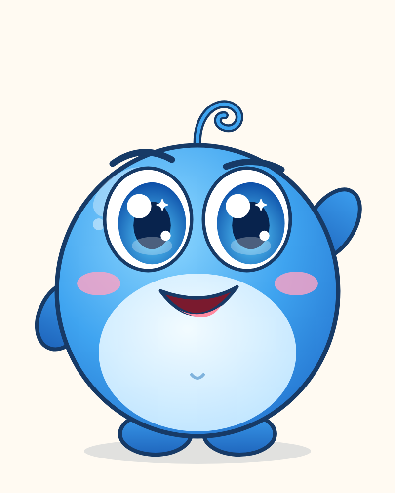
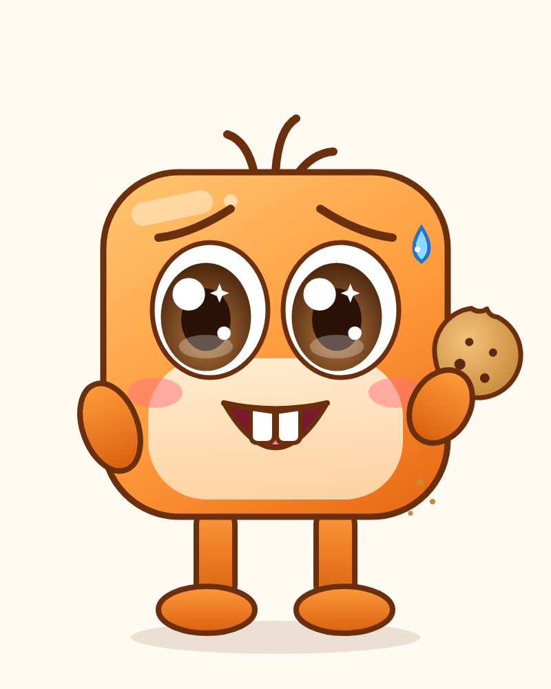

PİKO & MOKO
Karakter tasarım sayfası · v1

PİKO
Aşırı meraklıKendine çok güvenirHer şeyi keşfederPlanları felaket

MOKO
Biraz korkakÇok iştahlıPiko'nun peşinden giderKomik tepkiler
🔍 Piko bir şey keşfeder → 😰 Moko tehlikeyi sezer → 🙉 Piko dinlemez → 💥 İşler karışır → 🏃 Birlikte komik bir çıkış yolu bulurlar